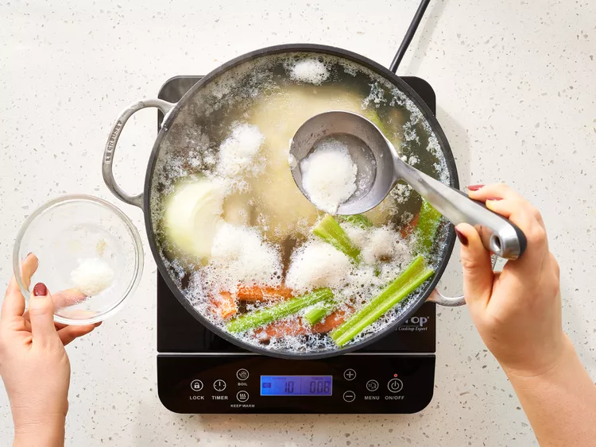
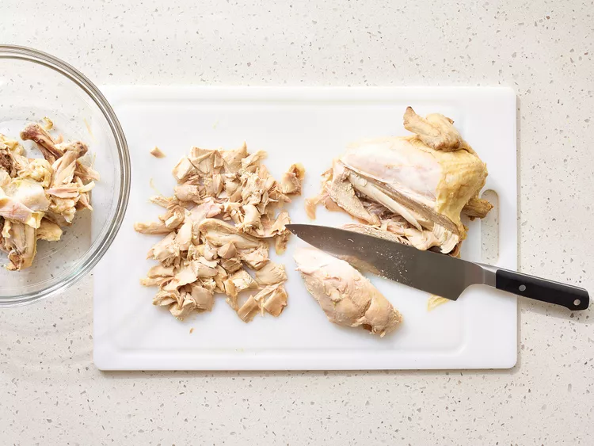
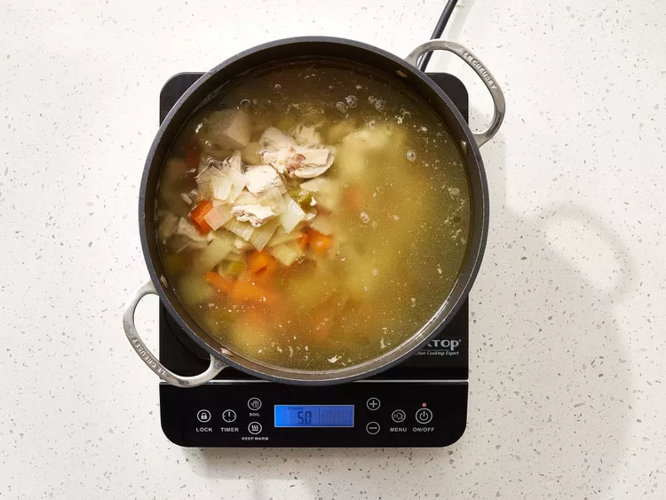
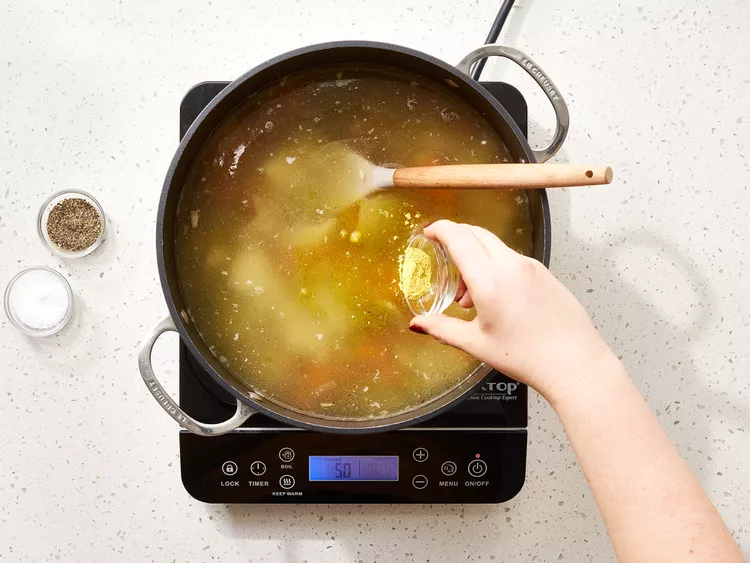

This homemade chicken soup recipe is well worth making — it's good for the body and the soul. How is it that plain chicken and vegetables simmered together can taste so satisfying? You don't have to be sick to deserve to enjoy it!
Gather all ingredients.
Place chicken, carrots, celery, and onion in a large soup pot; add enough cold water to cover. Bring to a boil over medium heat; reduce heat to low and simmer, uncovered, until meat falls off of the bone, about 90 minutes. Skim off foam every so often, as needed.
Remove chicken from the pot and let sit until cool enough to handle; chop meat into pieces, and discard skin and bones.
Strain out vegetables, reserving the stock; rinse the soup pot and return the stock to the pot. Chop vegetables into smaller pieces; return chopped chicken and vegetables to the pot.
Warm soup until heated through; season with salt, pepper, and chicken bouillon to taste.

Serve and enjoy!
Back to Recipes